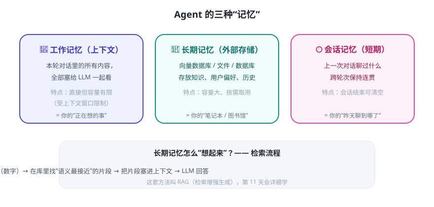

LLM 天生“健忘”——它只在回答的那一刻看到你给它的文字，关掉对话就什么都不记得。所以 Agent 的记忆，本质上都是开发者帮它外挂的存储。怎么存、怎么取，决定了 Agent 像不像一个“靠谱的同事”。
三种记忆，各司其职

关键概念 1：上下文窗口 = 工作记忆的“桌面”
- 模型每次只能看到窗口内的内容，放不下的就“想不起来”。
- 所以 Agent 每轮都要精心“收拾桌面”：只保留必要的历史、关键事实、工具结果。
- 对话太长时怎么办？——压缩：把旧对话总结成摘要，或只抽取关键信息（第 9 天“上下文工程”专门讲）。
关键概念 2：长期记忆靠“检索”，不靠“硬塞”
企业知识库可能有几十万页文档，不可能全塞进窗口。正确做法是“按需取用”：
- 把文档切成小片段，每个片段转成向量（一串数字）存进向量数据库——这一步叫 Embedding（嵌入）。语义相近的文字，向量也相近。
- 用户提问时，把问题也转成向量，去库里找“语义最接近”的若干片段。
- 只把这些片段放进上下文，让模型基于它们回答。
💡 为什么用“向量”而不是“关键词”？
搜“怎么给猫洗澡”时，用关键词可能找不到写“宠物清洁指南”的文档，但向量能发现两者语义相近。向量检索理解“意思”，关键词检索只认“字面”。
搜“怎么给猫洗澡”时，用关键词可能找不到写“宠物清洁指南”的文档，但向量能发现两者语义相近。向量检索理解“意思”，关键词检索只认“字面”。
关键概念 3：会话记忆怎么实现？
最简单的做法：把多轮对话历史存成消息列表，下一轮全部带上。复杂一点：区分“这轮临时信息”和“值得长期记住的用户偏好”，分别存短期与长期。Day 7 的迷你 Agent 里，你会亲手写一个最简版“记住/想起”。
常见疑问
Q：把整个对话历史都带上不就行了？
A：不行。窗口有限，历史越长越占地方、越贵、越慢；而且无关内容太多会让模型“抓不住重点”。真实系统都做“选择性记忆”。
A：不行。窗口有限，历史越长越占地方、越贵、越慢；而且无关内容太多会让模型“抓不住重点”。真实系统都做“选择性记忆”。
Q：长期记忆和 RAG 是一回事吗？
A：RAG（检索增强生成）是“外挂知识再回答”的整套方法，长期记忆是它的用途之一。第 11–12 天会完整动手做一次。
A：RAG（检索增强生成）是“外挂知识再回答”的整套方法，长期记忆是它的用途之一。第 11–12 天会完整动手做一次。
Q：Agent 会“记住”我的隐私吗？
A：它只记住你允许它存的内容。设计上要明确：哪些该存、存多久、谁能删——这是产品与合规问题，不是技术问题。
A：它只记住你允许它存的内容。设计上要明确：哪些该存、存多久、谁能删——这是产品与合规问题，不是技术问题。
✍️ 今日练习（约 10 分钟）
- 找任意 AI 助手，告诉它一个“事实”（如“我最喜欢的颜色是蓝色”），聊 8–10 轮后问它那个颜色——观察它记住没有；再开新会话问一次，对比结果。
- 打开一个能“上传文档问答”的工具，体验“问一句、它去文档里找答案”的过程，体会检索 vs 全塞进去的区别。
- 在笔记里画一张小图：你的“理想 Agent”需要记住哪 3 类东西？分别放短期还是长期？
📌 今日小结
三种记忆工作记忆（上下文）· 会话记忆（跨轮）· 长期记忆（外部存储）
长期记忆本质不是硬塞，而是“检索”：Embedding 向量化 + 找语义相近片段 + 放进上下文
向量检索优点理解“意思”，不只看“字面”
工程意识记忆要设计：存什么、存多久、谁能删
明天预告：第一周收官！动手写一个真正能跑的迷你 Agent——不依赖任何 API Key，体验“规划—工具—记忆”的最小闭环。